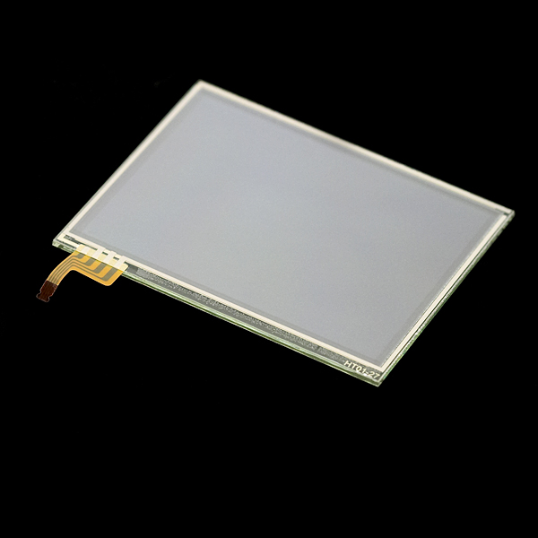
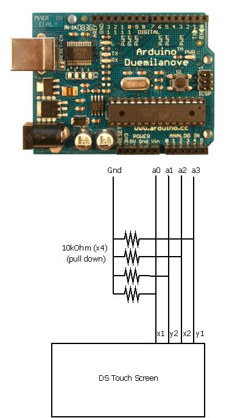
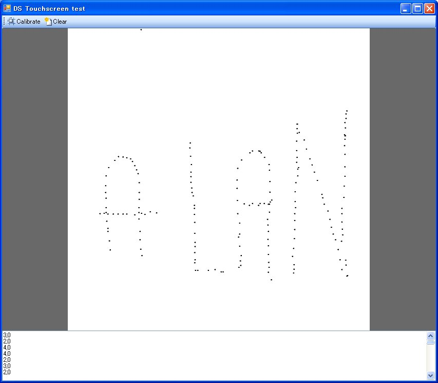
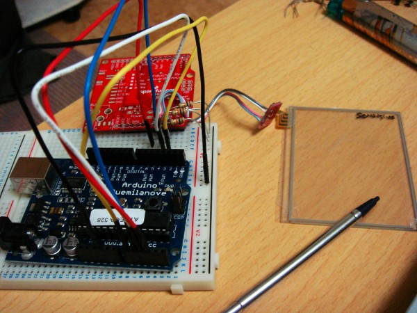

Realisation
Quite easy to do, with inexpensive components (Touch screen is 10$, break board connector 4$ and just buy it, don't be a hero), but with one or two caveats.
Sample, wiring and code here under. Everything is basically an application of Elm-chan's very good tutorial http://kousaku-kousaku.blogspot.com/2008/08/arduino_24.html (but not in Japanese).
You might be interrested in a project I did that uses it, it's the ardReveil. I divided the touchpad in 4 zones in/out/%20/- and used it as an input and it was quite successful. Project had other problems but at least this was really ok.
Caveats and what you should know
- Buy the breakboard it make your life easier. You can solder directly to the connector, I did it (see below), but I don't recommend it seeing the ration complexity/benefit. Just spend 4 bucks.
- Touchscreen has 2 sides and only one is sensitive. Can seem obvious when you know, but I didn't at first...
- Don't forget the pulldown resistors. Otherwise you have floating results and can't get anything meaningful as a result. Depending on the resistors you will put, you will have different results:
- Put 470 ohm : the read values are [0..200] and you don't read a square but a triangle : one angle is in the middle of the hypothenus of the others, you have to do calibration/transformation matrix or barycenters ... it's high school maths for the later, but not fun. Small resistor value = bad idea
- Put 10k Ohm : you get a nice, square reading, values [0 .. 800]. No calibration or post calculation needed. 10k%20 resistor value = good idea
- There's no limit on how fast you can read as per my tests, knock yourself out!
- Answering some people questions : it takes 5v at least in the present implementation (arduino runs on 5v). With the big pull-down (10kOhm), the pull-down intensity is very low, like 0.5 mA, a triffle.
- Use the breakboard for the connector if possible. Indeed, my first touch screen fit perfectly and was well bound to it, but ... the 2 recent ones I bought (obviously different models, with greenish border) even though look exactly the same, they didn't fit in the connector ! It looked like ok, but contact was not done and it was loose, the screen going out of the connector as if it was not blocked at all... then comes the time for real solder-soldier:
- With thin scisors, cut the screen connector to separate the 4 little tracks to connect
- Drop a little solder on each. Beware of short cuts and don't burn it (even if it's kapton ) : be swift.
- Prepare a 4 wire map (flat cable) by presoldering each wire
- The real hard part: wire per wire, make the contact between the connector track and the wire, heat up to have the solder to melt and make contact, and don't move (makes bad solder)
- If you're at that point, you're not too bad, kind of cold-handed guy ^^ So insert a piece of paper between the soldered wires (very close, might short-cut) and maybe hot glue it or wrap it with tape.
- TADA! It's done. Goo news is that the wire order is the same as with the connector.
Pictures
Too many people use this, too few put a diagram. I suck a electronic, so I put a graph.
One important word : 4x 10kOhm can't be replaced with just one, don't waste time trying.

With the 10 kOhm resistors, nice reading, no recalibration : raw results drawn on a 800x800 picture. Life is great.
BEWARE: this pin assignement is according the code here under. If you have other assignement, just change the constants in the header of the Arduino code.

Arduino 2009 %20 4x 10 kOhm %20 Connector %20 DS touch screen. You can do that within 1 hour for sure...
Links
Shopping
- Screen (Sparkfun for US, Switch-Science for the japanese) http://www.sparkfun.com/commerce/product_info.php?products_id=8977 http://www.switch-science.com/products/detail.php?product_id=105
- Connector (don't be a hero, spend 4$) https://www.sparkfun.com/commerce/product_info.php?products_id=9170 http://www.switch-science.com/products/detail.php?product_id=178
Documentation and tutorials
- Sparkfun's tutorial http://www.sparkfun.com/commerce/tutorial_info.php?tutorials_id=139
Reading values
- WORKING Same as the link here under BUT in Japanese BUT with a schema ! http://kousaku-kousaku.blogspot.com/2008/08/arduino_24.html
- Not working a RGB mixer with a DS touchscreen ... wait a minute, that's EXACLTY what I planned ! http://www.arduino.cc/cgi-bin/yabb2/YaBB.pl?num=1243499684
Calibration (no need with 10kOhm pull down)
- http://www.embedded.com/story/OEG20020529S0046
- EEIOL_2002JUN02_EMS_OPTO_TA.pdf taken from http://www.eetindia.co.in/ART_8800503899_1800010_TA_1f833eab.HTM
Code
- Download code here DSTouchScreen_Test2.pde
// Taken from http://kousaku-kousaku.blogspot.com/2008/08/arduino_24.html /* #define xLow 14 #define xHigh 15 #define yLow 16 #define yHigh 17 */ //modified to match my sparkfun connector #define xLow 17 #define xHigh 15 #define yLow 16 #define yHigh 14 void setup(){ Serial.begin(9600); } void loop(){ pinMode(xLow,OUTPUT); pinMode(xHigh,OUTPUT); digitalWrite(xLow,LOW); digitalWrite(xHigh,HIGH); digitalWrite(yLow,LOW); digitalWrite(yHigh,LOW); pinMode(yLow,INPUT); pinMode(yHigh,INPUT); delay(10); //xLow has analog port -14 !! int x=analogRead(yLow -14); pinMode(yLow,OUTPUT); pinMode(yHigh,OUTPUT); digitalWrite(yLow,LOW); digitalWrite(yHigh,HIGH); digitalWrite(xLow,LOW); digitalWrite(xHigh,LOW); pinMode(xLow,INPUT); pinMode(xHigh,INPUT); delay(10); //xLow has analog port -14 !! int y=analogRead(xLow - 14); Serial.print(x,DEC); Serial.print(","); Serial.println(y,DEC); delay(200); }